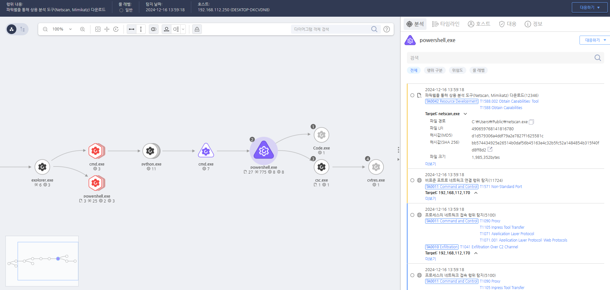

T1588.002.55 상용 도구 사용(Netscan,Mimikatz)
D3FEND
MITRE ATT&CK 액션을 기준으로 대응 방안을 작성
Detection
모니터링을 통해 익스플로잇 또는 공격에 사용되는 mimikatz, netscan 도구의 실행을 확인합니다.
Detection(EDR)

https://172.18.10.125:8903/#/event/edr/675fb4f0002dc7960000159a
https://172.18.10.125:8903/#/event/edr/675fb4f0002dc7960000161e
Response
공격자에 의해 PC가 제어되었을 가능성이 있으므로 호스트 네트워크를 격리합니다.
Mitigations
클라우드 스토리지 액세스 제어 (M1041 - Cloud Infrastructure Protection)
- 클라우드 스토리지에 대한 액세스 권한을 철저히 관리하고, 필요 최소한의 권한을 적용하여 불필요한 데이터 액세스를 제한
- 클라우드 스토리지 계정에 대한 인증 강화(예: 다단계 인증(MFA))를 적용하여 무단 액세스를 방지
- 정기적인 클라우드 스토리지 모니터링을 통해 의심스러운 액세스나 비정상적인 활동을 실시간으로 추적
클라우드 스토리지 감사 로그 활성화 (M1047 - System Logging & Monitoring)
- 클라우드 스토리지 서비스에서 발생하는 모든 액세스 및 파일 업로드/다운로드 활동을 실시간 감사 로그로 기록
- 로그 모니터링 시스템을 사용하여 의심스러운 활동(예: 대량의 데이터 전송, 의도하지 않은 파일 변경)을 탐지
- 클라우드 서비스 제공자의 로그 관리 기능을 활성화하여 공격자의 행위 패턴을 추적하고 경고 시스템을 통해 알림
네트워크 세그먼트화 및 방화벽 규칙 설정 (M1031 - Network Segmentation)
- 클라우드 서비스와 내부 네트워크 사이에 네트워크 세그먼트화를 적용하여, 불필요한 네트워크 경로를 차단
- 방화벽 및 네트워크 액세스 제어를 사용하여 클라우드 스토리지와의 직접적인 연결을 제한하고, 외부와의 불필요한 통신을 차단
- 클라우드 스토리지 통신을 특정 IP 범위로 제한하여 비정상적인 접근을 방지
클라우드 스토리지 암호화 (M1035 - Data Encryption)
- 클라우드 스토리지에 저장된 데이터에 대해 암호화를 적용하여 악의적인 공격자가 데이터를 손쉽게 탈취하거나 열 수 없도록 보호
- 전송 중 데이터 및 저장된 데이터에 대해 엔드-투-엔드 암호화를 사용하여 클라우드에서의 데이터 유출을 방지
- 암호화 키 관리를 철저히 하여, 불법적인 액세스가 발생했을 때 데이터가 유출되지 않도록 보호
클라우드 서비스 제공자의 보안 기능 활용 (M1016 - Service Account Security)
- 클라우드 서비스 제공자가 제공하는 보안 기능(예: 클라우드 보안 관리 도구, 자동화된 보안 검토 시스템)을 사용하여 클라우드 인프라에 대한 보안 감시를 강화
- 서비스 계정의 최소 권한 원칙을 적용하고, 불필요한 권한 상승을 방지하기 위해 권한 관리 시스템을 강화
- 자동화된 보안 정책을 통해 불법적인 액세스 시도를 차단하고 정기적인 보안 스캔을 수행하여 취약점을 최소화
클라우드 서비스와의 데이터 전송 모니터링 (M1033 - Process Monitoring)
- 클라우드 스토리지와의 연결을 모니터링하고, 대량 데이터 전송이나 이상 징후를 탐지하여 의심스러운 활동을 식별
- 클라우드와의 비정상적인 연결을 차단하거나 제한하는 보안 솔루션을 배포하여, 비정상적인 데이터 이동을 방지
- 클라우드 스토리지 서비스와 연결된 애플리케이션 및 프로세스의 활동을 지속적으로 감시하여 이상 행동을 탐지
Affected Techniques
Action 실행시 함께 영향을 받는 다른 Techniqes
| D3FEND |
| D3-FCA File Creation Analysis |
| D3-FIM File Integrity Monitoring |
| D3-PLA Process Lineage Analysis |
| D3-CCSA Credential Compromise Scope Analysis |
| D3-DA Dynamic Analysis |